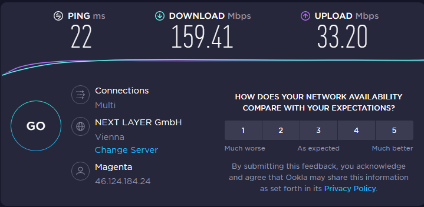

ich stelle beim Router Huawei 5G CPE Pro 2 erhebliche Geschwindigkeitsunterschiede zwischen LAN und WLAN fest.
Habe verschiedene Netzwerkkabel (CAT5e, CAT6, CAT7) getestet, 2 Notebooks und Desktop-Rechner direkt am Router angeschlossen (keine Switch etc. dazwischen), immer das gleiche Ergebnis: Bei LAN max. ca. 175 MBits im Download, bei WLAN (5G) vollen Speed, bis zu 490 MBits:
LAN:

WLAN:
Woran kann das liegen?
Danke, Hannes
Bearbeitet
von Hannes69
Rexalius2000
Hallo
@Hannes69
und willkommen in der Magenta Community,
Um was für eine Netzwerkarte(n))handelt es sich dabei? Schaut für mich so aus das die Netzwerkkarten nicht mehr schaffen.
Hannes69
Hallo Rexalius2000,
danke für die Antwort, aber Netzwerkkarten als Flaschenhals kann ich ausschließen, laufen bei beiden Notebooks und dem Desktop mit 1000 MBits Full Duplex.
Hannes69
Hallo,
ich konnte das Problem mittlerweile lösen.
Habe den Router auf Werkseinstellungen zurückgesetzt und neu eingerichtet, nun ist die Geschwindigkeit vom LAN mit WLAN gleich hoch.

{kind=link}
{kind=link}